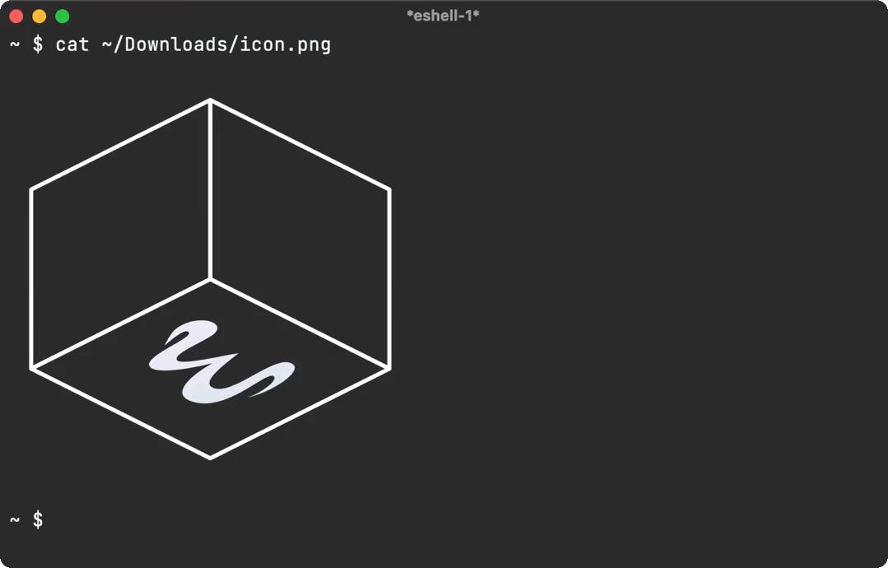

Álvaro Ramírez
Rinku: CLI link previews
In my last Bending Emacs episode, I talked about overlays and used them to render link previews in an Emacs buffer.
While the overlays merely render an image, the actual link preview image is generated by rinku, a tiny command line utility I built recently.
Rinku leverages macOS APIs to do the actual heavy lifting, rendering/capturing a view off screen, and saving to disk. Similarly, it can fetch preview metadata, also saving the related thumbnail to disk. In both cases, rinku outputs to JSON.
By default, rinku fetches metadata for you.
rinku https://soundcloud.com/shehackedyou
Returns:
{
"title": "she hacked you",
"url": "https://soundcloud.com/shehackedyou",
"image": "path/to/preview.png"
}
In this instance, the image looks a little something like this:

On the other hand, the --render flag generates a preview, very much like the ones you see in native macOS and iOS apps.
rinku --render https://soundcloud.com/shehackedyou
Returns:
{
"image": "path/to/preview.png"
}
Similarly, the preview renders as follows:

Eshell superpowers
While overlays is one way to integrate rinku anywhere in Emacs, I had been meaning to look into what I can do for eshell in particular. Eshell is just another buffer, and while overlays could do the job, I wanted a shell-like experience. After all, I already knew we can echo images into an eshell buffer.
Before getting to rinku on eshell, there's a related hack I'd been meaning to get to for some time… While we're all likely familiar with the cat command, I remember being a little surprised to find that eshell offers an alternative cat elisp implementation. Surprised too? Go check it!
$ which cat
eshell/cat is a native-comp-function in ‘em-unix.el’.
Where am I going with this? Well, if eshell's cat command is an elisp implementation, we know its internals are up for grabs, so we can technically
extend it to display images too. eshell/cat is just another function, so we can advice it to add image superpowers.
I was pleasantly surprised at how little code was needed. It basically scans for image arguments to handle within advice and otherwise delegates to eshell's original cat implementation.
(defun adviced:eshell/cat (orig-fun &rest args) "Like `eshell/cat' but with image support." (if (seq-every-p (lambda (arg) (and (stringp arg) (file-exists-p arg) (image-supported-file-p arg))) args) (with-temp-buffer (insert "\n") (dolist (path args) (insert-image (create-image path (image-type-from-file-name path) nil :max-width 350)) (insert "\n")) (insert "\n") (buffer-string)) (apply orig-fun args))) (advice-add #'eshell/cat :around #'adviced:eshell/cat)
And with that, we can see our freshly powered-up cat command in action:

By now, you may wonder why the cat detour when the post was really about rinku? You see, this is Emacs, and everything compounds! We can now leverage our revamped cat command to give similar eshell superpowers to rinku, by merely adding an eshell/rinku function.
As we now know, rinku outputs things to JSON, so we can use json-read-from-string to parse the process output and subsequently feed the image path to eshell/cat. rinku can also output link titles, so we can show that too whenever possible.
(defun eshell/rinku (&rest args) "Fetch link preview with rinku and display image inline. Usage: rinku https://soundcloud.com/shehackedyou rinku --render https://soundcloud.com/shehackedyou" (unless args (error "rinku: no arguments provided")) (let* ((output (with-temp-buffer (apply #'call-process "rinku" nil t nil args) (buffer-string))) (metadata (condition-case nil (json-read-from-string output) (error nil)))) (if metadata (concat (if (map-elt metadata 'image) (eshell/cat (map-elt metadata 'image)) "\n") (when (map-elt metadata 'title) (concat (map-elt metadata 'title) "\n\n"))) output)))
With that, we can see the lot in action:

While non-Emacs users are often puzzled by how frequently we bring user flows and integrations on to our beloved editor, once you learn a little elisp, you start realising how relatively easily things can integrate with one another and pretty much everything is up for grabs.
Make it all sustainable
Reckon rinku and these tips will be useful to you? Enjoying this blog or my projects? I am an 👉 indie dev 👈. Help make it sustainable by ✨sponsoring✨
Need a blog? I can help with that. Maybe buy my iOS apps too ;)